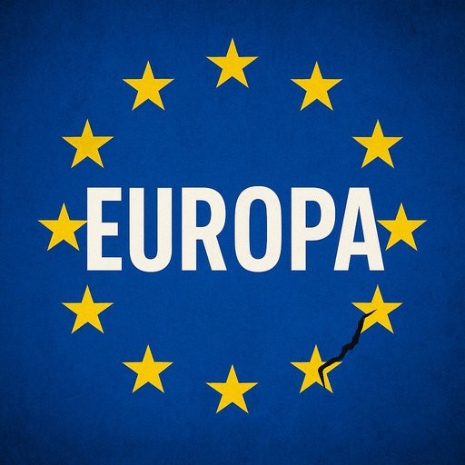

Publicado em 2025-06-23 12:26:49
Publicado em 24 de Junho de 2025
Por Francisco Gonçalves
“Não se pode combater a força das armas com diálogos mansos. Nem se pode resistir à tirania com reuniões de café.”
A Europa contemporânea vive num estado de negação existencial. Um continente que, outrora, traçou os caminhos da civilização, do conhecimento, da arte e da ciência, resume-se hoje a uma entidade amorfa, hesitante, e profundamente desorientada. Vive-se entre "nims" — nem sim, nem não — enquanto o mundo arde à sua volta.
A guerra na Ucrânia revelou o que muitos já temiam: a União Europeia é uma ficção geoestratégica, uma promessa sempre adiada, um colosso económico com alma de burocrata e voz de ventríloquo. O massacre russo continua, dia após dia, perante os olhos do mundo, e a Europa limita-se a condenações protocolares, ajudas parceladas, reuniões vazias e promessas que nunca chegam ao campo de batalha.
Putin, esse estratega cínico e impiedoso, joga xadrez com a vida dos povos enquanto os líderes europeus jogam sudoku diplomático. A Ucrânia sangra. E a Europa não impede — observa.
A ilusão europeia é essa mesma: viver da sua reputação passada, fingir que lidera, enquanto falha o essencial — proteger a liberdade, a democracia e os valores que diz representar. Diálogos mansos com tiranos não salvam vidas. Palavras não travam tanques. E enquanto a Europa fala, a Rússia mata.
Numa era de blocos fortes, de afirmações brutais de poder, a Europa é apenas um coro dissonante de vozes tímidas e contraditórias. Fala de paz, mas não impõe justiça. Fala de união, mas age com desunião. Fala de valores, mas capitula perante o medo.
Está em causa mais do que a Ucrânia. Está em causa o futuro da Europa, o respeito que impõe (ou não impõe) no xadrez mundial, a relevância que ainda pode ter — ou a irrelevância para que caminha.
"Enquanto a Ucrânia sangra, a Europa hesita. Enquanto Putin massacra, Bruxelas reúne. Não se combate a tirania com diplomacia de papel nem se detém um império com notas de rodapé."